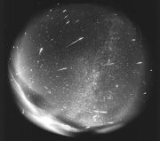
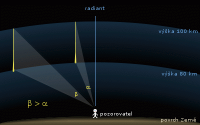
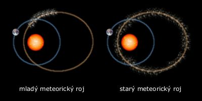
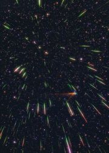

Meteorické roje
Meteorické roje a deště

Leonidy – na obrázku je dobře patrný radiant.
{kind=link}
Původ
Meteorická tělíska nejčastěji pochází z komet a od původní dráhy komety se příliš nevzdalují. Pokud ji Země křižuje, pozorujeme meteorický roj.
Radiant
Rojové meteory zdánlivě vylétají na obloze z jednoho bodu nebo nevelké plošky. Toto místo se nazývá radiant. Meteorická tělíska v roji mají ve skutečnosti téměř rovnoběžné dráhy a tento jev vzniká pouze díky perspektivě.
Směrem od radiantu se meteory prodlužují a zrychlují. To je dáno různým úhlem, pod kterým pozorujeme jednotlivé meteory. Tento úhel závisí na vzdálenosti meteoru od směru radiantu. Přímo v radiantu se budou objevovat stacionární meteory.

Pojmenování meteorických rojů
Meteorické roje mají jméno podle latinského názvu souhvězdí, ve kterém mají radiant. Pokud je v souhvězdí rojů více, před název se vloží řecké písmenko označující jasnou hvězdu u které je radiant poblíž. Roj Kvadrantid je z historických důvodů pojmenován po zaniklém souhvězdí Kvadrantu.
Mladý a strarý meteorický roj
Na obrázku je vidět rozdíl mezi dráhou mladého a starého meteorického roje. V mladém je větší koncentrace meteorických tělísek na jednom místě (tam, kde je zanechala mateřská kometa). V dráze starého meteorického roje jsou meteoroidy rozprostřeny po celé dráze.

Hlavní meteorické roje
| Název roje | Datum maxima | Souhvězdí | Maximální frekvence (meteorů za hodinu) |
Mateřská kometa |
|---|---|---|---|---|
| Kvadrantidy | 3. ledna | Pastýř | 50 – 80 | 96P/Machholz 1 |
| Lyridy | 22. dubna | Lyra | 20 | Tchatcher 1861 I |
| eta Akvaridy | 4. května | Vodnář | 50 | 1P/Halley |
| Perseidy | 12. srpna | Perseus | 75 | 109P/Swift-Tuttle |
| Drakonidy | 10. října | Drak | proměnlivá | 21P/Giaccobini-Zinner |
| Orionidy | 21. října | Orion | 25 | 1P/Halley |
| Leonidy | 18. listopadu | Lev | 25, proměnlivá | 55P/Tempel-Tuttle |
| Geminidy | 14. prosince | Blíženci | 75 | (3200) Phaeton |

Leonidy 18. 11. 2001
Expozice trvala 1 minutu a 10 sekund.
{kind=link}
Meteorické deště
Výjimečně bohatý meteorický roj nazýváme meteorickým deštěm. Maximální frekvence je řádově až stovky meteorů za minutu.
V posledních dvou stech letech se jako meteorické deště projevily roje Leonid, Andromedid nebo Drakonid.
Jako deště se projevují mladé roje, které mají nerovnoměrnou koncentraci meteorických tělísek. Takže roj může být v některých letech bohatý, v jiných zas velmi chudý.